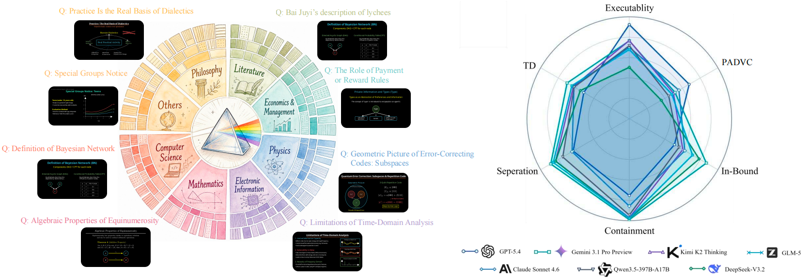
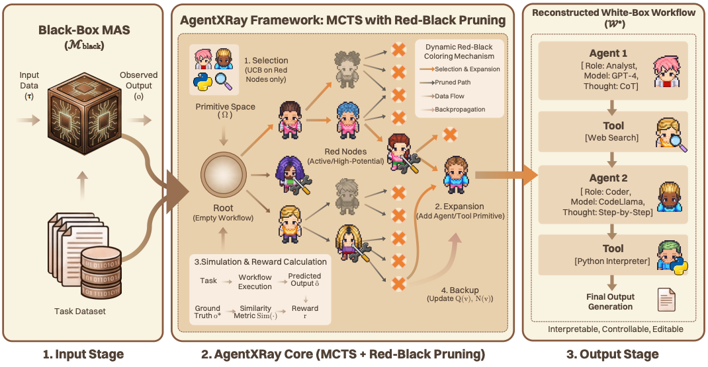

{kind=link}

Yuheng Wang
I'm Yuheng Wang (汪宇恒), a first-year Ph.D. student at the School of Artificial Intelligence (SAI), Shanghai Jiao Tong University, advised by the wonderful Prof. Chen Qian. My research focuses on Agentic RL and Multi-agent Systems, with a particular interest in how agents collaborate, reason, and solve complex tasks. I lead the TeachMaster project under the guidance of Prof. Weinan E and Prof. Chen Qian.
I am also a research intern at Tencent, where I was selected for the Tencent Elite Program and work on agentic multimodal generation.
I received my bachelor's degree from Wuhan University in 2026. During my undergraduate studies, I conducted research at the LACC Laboratory, advised by Prof. Donghong Ji and Dr. Bobo Li.
I am a member of the MLNLP Student Committee and Ubiquant. Feel free to reach out via email if you are interested in research collaboration or QR/QD opportunities.
Selected Publications
† co-first-author · * corresponding author




Internships
- 2026.5 — Now Tencent Elite Program, Tencent · Agentic RL
- 2025.8 — Now TsinghuaNLP, Tsinghua University · Multi-Agent Systems
- 2025.5 — 2026.8 SAI, Shanghai Jiao Tong University · Multi-Agent Systems
- 2024.6 — 2024.8 NJUNLP, Nanjing University · LLM Interpretability · Best Performance Award
- 2024.4 — 2025.6 LACC Laboratory, Wuhan University · LLMs & Agents
Activities
Guest Speaker
- 2025Mathematical Modeling Seminar, Shanghai Jiao Tong University
- 2025Mathematical Modeling Workshop, Wuhan University
- 2026Tech Roundtable, Ubiquant
Invited Attendee
- 2026Beyond LLM Closed-Door Summit, Sequoia Capital
Reviewer
- 2026ACM MM · ACM International Conference on Multimedia
- 2026ICML · International Conference on Machine Learning
- 2026Nature Communications
- 2026NLPCC · CCF Conference on Natural Language Processing and Chinese Computing
Honors & Awards
- 2026Outstanding Graduate, Wuhan University
- 2025Presidential Scholarship (¥100,000), Hong Kong University
- 2025Leijun Scholarship, Wuhan University
- 2025Leijun Innovation Fund, Wuhan University
- 20251st Prize, China College Student Computer Design Competition
- 20252nd Prize, China Robot and Artificial Intelligence Competition
- 2024Huawei Scholarship, Wuhan University (Top 1% Faculty-wide)
- 2024Bronze Medal, NeurIPS – Ariel Data Challenge
- 2024Bronze Medal, Kaggle · LMSYS Chatbot Arena Human Preference
- 20241st Prize, China National Collegiate Mathematical Modeling
- 20241st Prize, "Huazhong Cup" Modeling Challenge (7 / 5000+)
- 2022 — 2024WHU Excellent Scholarship, Wuhan University
- 20212nd Prize, National Middle School Mathematics Olympiad (Anhui)